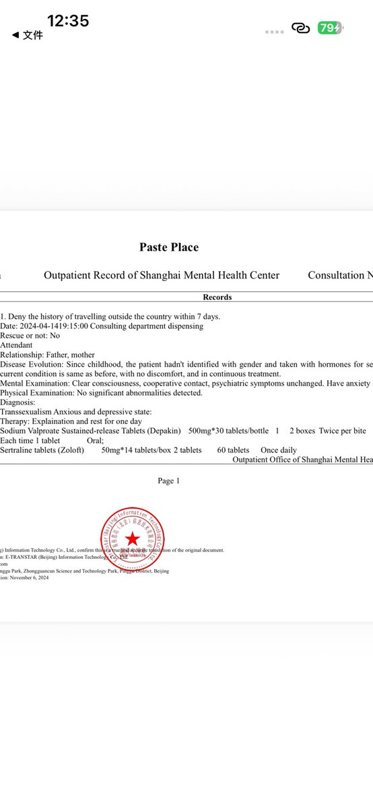
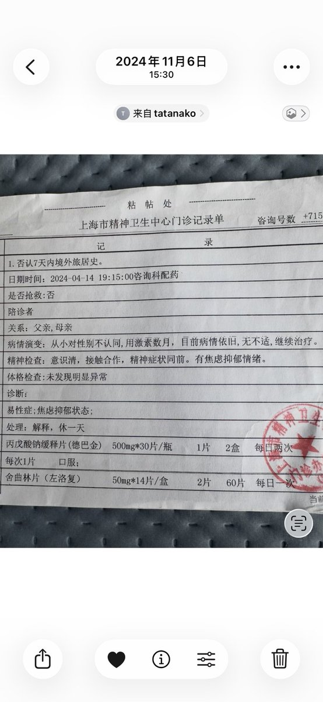
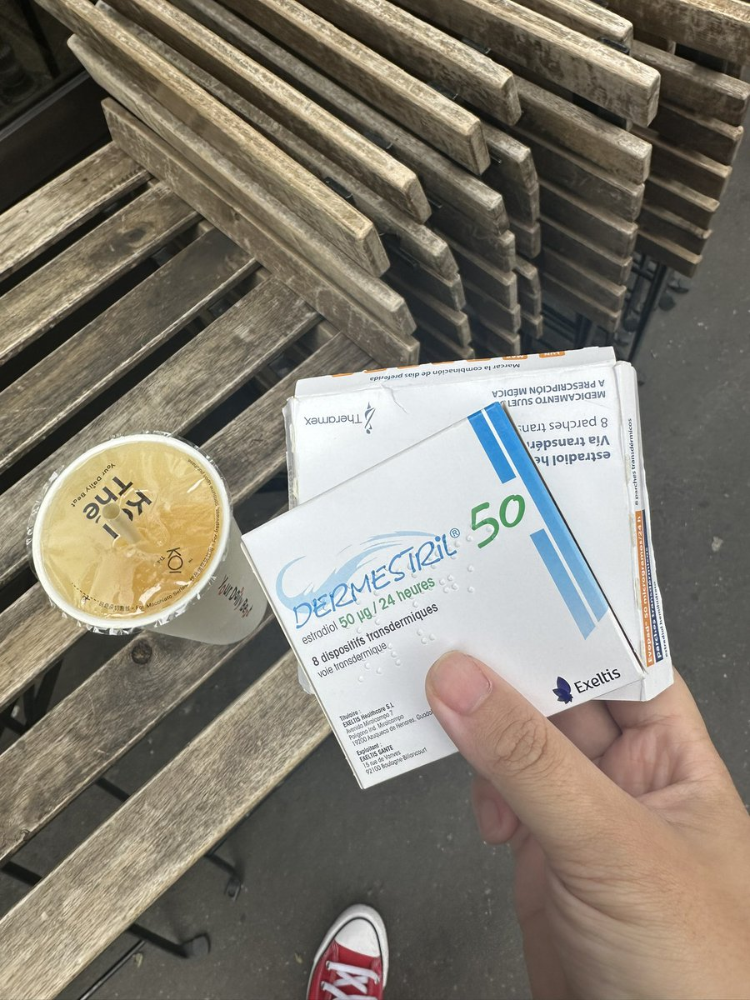
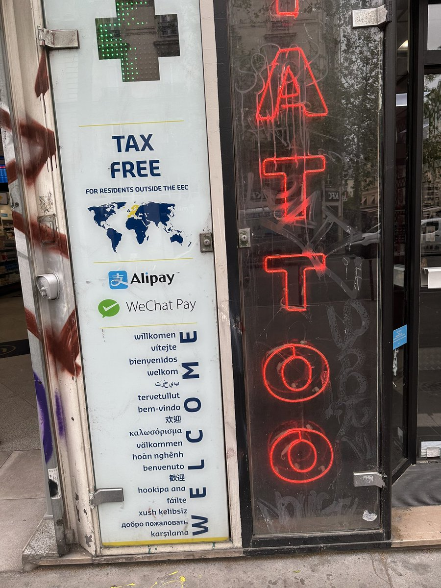

洛铃🦊Magic Caster
@LolingVerse
@NagiExpress aw




Nagi想舔你喉结
@NagiExpress
绷不住了
在巴黎试图买糖
他们要我处方
我想起了我手里有我前女友的小证，还有英文版的
于是我就把英文版的小证给上去（我并不知道证里有什么，但有易性证那有激素很正常吧
结果巴黎药房发癫，看到上面只有舍曲林和丙戊酸钠，告诉我说只能给我开精品神药，不能给我开雌二醇
我只好换店 https://t.co/gXwNxei2IA